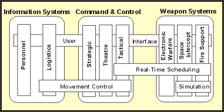

| Artifact: Reference Architecture |
 |
|
|
Reference Architecture work products are part of an organization's reusable asset base. Their purpose is to form a starting point for architectural development. They may range from ready-made architectural patterns, architectural mechanisms and frameworks, to complete systems, with known characteristics, proven in use. They may be applicable generally, or for a broad class of systems spanning domains, or have a narrower, domain-specific, focus. The use of tested reference architectures is an effective way to address many non-functional requirements, particularly quality requirements, by selecting existing reference architectures, which are known through usage to satisfy those requirements. Reference Architectures may exist or be used at different levels of abstraction and from different viewpoints. These correspond to the 4+1 Views (see "A Typical Set of Architectural Views"). In this way, the software architect can select what fits best-just architectural design, or design and implementation, to varying degrees of completion. Often, a Reference Architecture is defined not to include instances of the components that will be used to construct the system-if it does it becomes a product-line architecture-but this is not a hard and fast distinction. In the Rational Unified Process (RUP), we allow the notion of Reference Architecture to include references to existing, reusable components (that is, implementations). |
| Roles | Responsible: | Modified By: |
|---|---|---|
| Tasks | Input To: | Output From: |
| Process Usage | ||
| Main Description | Organization of AssetsThe organization which owns the Reference Architecture assets will need to decide how the assets are to be classified and organized for easy retrieval by the software architect, by matching selection criteria for the new system. Although the creation and storage of Reference Architectures is currently outside the scope of the RUP, one suggestion is that architectures be organized around the idea of Term Definition: domain, where a domain is a subject area that defines knowledge and concepts for some aspect of a system, or for a family of systems. Here we are allowing use of the term 'domain' at levels below that of the application. This usage differs slightly from some definitions - for example, that presented in [HOF99] - but aligns well with that presented in [LMFS96]: "Product-Line Domain: A bounded group of capabilities - present and/or future - defined to facilitate communication, analysis and engineering in pursuit of identifying, engineering and managing commonality across a product-line. Such domains might include closely related groups of end-user systems, commonly used functions across multiple systems, or widely applicable groupings of underlying services." This definition includes the notion that things used to compose systems may themselves belong to a domain worthy of study in its own right. The figure below, taken from [LMFS96], illustrates this principle.
 Horizontal and Vertical Domains for the US Army This figure shows the major system families, Information Systems, Command & Control, and Weapon Systems, each with some wholly contained vertical domains, and horizontal domains that cut across these and also across system families. Thus, Real-Time Scheduling concepts are applicable to the Tactical Domain of Command & Control and all vertical domains of Weapon Systems. It probably makes sense therefore, to solve real-time scheduling problems once for all these domains, and treat the knowledge and assets so developed as a separate domain, which then has an association to, for example, Electronic Warfare, but not to Personnel Information Systems. ContentsThe Reference Architecture has the same form as the Artifact: Software Architecture Document and the associated models, stripped of project specific references, or having project references and characteristics made generic, so that the Reference Architecture may be classified appropriately in the asset base. Typical models associated with the Software Architecture Document (SAD) are a Use-Case Model, Design Model, Implementation Model and Deployment Model. Access to the SAD and associated models gives several points of entry for the software architect, who could choose to use just the conceptual or logical parts of the architecture (if the organization's reuse policy allows this). At the other extreme, the software architect may be able to take from the asset base complete working subsystems, and a Deployment Model at the physical level (that is, a complete hardware and network blueprint). Other supporting artifacts are needed to make the architectural assets usable.
|
|---|---|
| Brief Outline |
Organization of AssetsThe organization which owns the Reference Architecture assets will need to decide how the assets are to be classified and organized for easy retrieval by the software architect, by matching selection criteria for the new system. Although the creation and storage of Reference Architectures is currently outside the scope of the RUP, one suggestion is that architectures be organized around the idea of domains, where a domain is a subject area that defines knowledge and concepts for some aspect of a system, or for a family of systems. Here we are allowing use of the term 'domain' at levels below that of the application. This usage differs slightly from some definitions-for example, that presented in [HOF99]-but aligns well with that presented in [LMFS96]: "Product-Line Domain: A bounded group of capabilities - present and/or future - defined to facilitate communication, analysis and engineering in pursuit of identifying, engineering and managing commonality across a product-line. Such domains might include closely related groups of end-user systems, commonly used functions across multiple systems, or widely applicable groupings of underlying services." This definition includes the notion that things used to compose systems may themselves belong to a domain worthy of study in its own right. The figure below, taken from [LMFS96], illustrates this principle.
Horizontal and Vertical Domains for the US Army This figure shows the major system families, Information Systems, Command & Control, and Weapon Systems, each with some wholly contained vertical domains, and horizontal domains that cut across these and also across system families. Thus, Real-Time Scheduling concepts are applicable to the Tactical Domain of Command & Control and all vertical domains of Weapon Systems. It probably makes sense therefore, to solve real-time scheduling problems once for all these domains, and treat the knowledge and assets so developed as a separate domain, which then has an association to, for example, Electronic Warfare, but not to Personnel Information Systems. ContentsThe Reference Architecture has the same form as the Artifact: Software Architecture Document and the associated models, stripped of project specific references, or having project references and characteristics made generic, so that the Reference Architecture may be classified appropriately in the asset base. Typical models associated with the Software Architecture Document (SAD) are a Use-Case Model, Design Model, Implementation Model and Deployment Model. Access to the SAD and associated models gives several points of entry for the software architect, who could choose to use just the conceptual or logical parts of the architecture (if the organization's reuse policy allows this). At the other extreme, the software architect may be able to take from the asset base complete working subsystems, and a Deployment Model at the physical level (that is, a complete hardware and network blueprint). Other supporting work products are needed to make the architectural assets usable.
|
| Representation Options | UML Representation: A number of relevant architectural views: Use-Case, Logical, Process, Deployment, Implementation, Data.
Unless the system is completely unprecedented, Reference Architectures should be examined for applicability (to the domain and type of development) if they exist and are accessible to the development organization. The creation of Reference Architectures is an issue to be addressed at the organization level. It's certainly possible to cut back on the contents list above and still achieve some benefits from architectural reuse. For example, it is possible to omit the test model, although tests would have to be rewritten if the architecture is modified. At a minimum one might expect a design model and some associated behavioral description (perhaps the Use-Case Model). Any less and it's difficult to call the asset a Reference Architecture. It could still be a valid pattern. |
|---|
© Copyright IBM Corp. 1987, 2006. All Rights Reserved. |